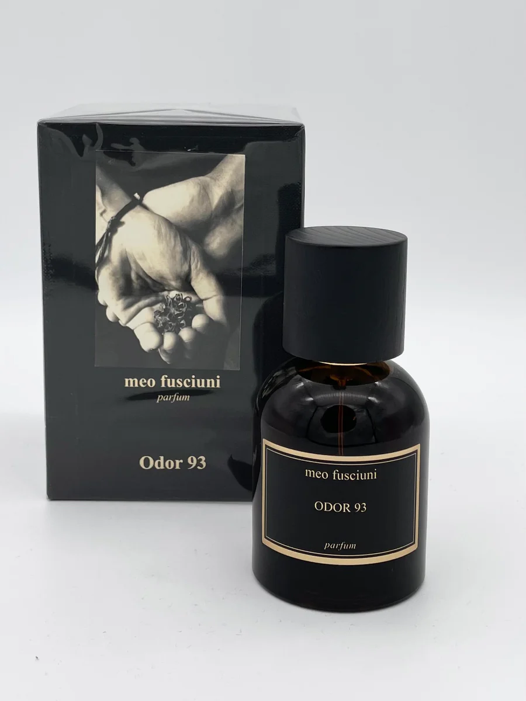

Parfumurile de nisa sunt unice si elegante, realizate din ingrediente rare.Parfumierii de nișă combină adesea aceste ingrediente naturale rare cu molecule sintetice inovatoare (create în laborator special pentru o anumită casă de parfumuri) pentru a obține o proiecție și o complexitate care nu pot fi reproduse la scară industrială.

© 2026 Parfumuri de nisa